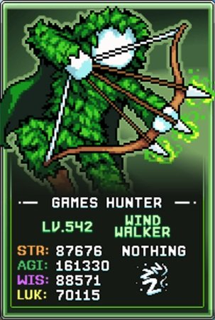
Tempest Form / 데미지 빌드
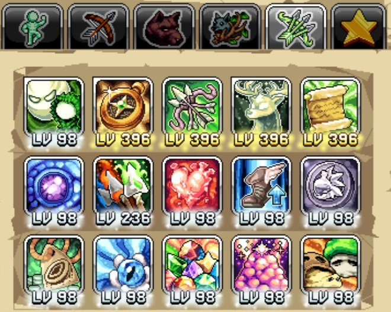
이 데미지 탤런트 빌드는 Tempest Form이나 경험치 파밍에 초점을 맞추며, 먼지(Dust) 획득을 최대화하고 범위 공격으로 빠른 몬스터 처치를 목표로 합니다.
이 가이드는 클래스를 잠금 해제한 후 모든 Wind Walker 탤런트에 1포인트씩 투자해 탤런트 레벨 보너스를 활성화한 다음, 아래 핵심 탤런트에 포인트를 투자할 것을 권장합니다:
| 탤런트 | 효과 | 설명 |
|---|---|---|
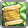 Some Commandments |
Uwu Rawrrr 지속시간 증가, 멧돼지 및 나초 이중 소환 확률, Whale 쿨다운 단축 | 주요 리스폰 탤런트와 맵 클리어 능력을 크게 강화합니다. |
| Compass | Tempest Form 업그레이드 창을 열고 발견되는 먼지 수동 증가 | 탤런트를 통해 사용 가능한 가장 큰 먼지 부스트 원천으로, 두 번째 우선순위입니다. |
 Eternal Hunt Eternal Hunt |
정령 순록(Spirit Reindeer)을 소환하고 일시적으로 발견되는 먼지 증가 | Tempest 업그레이드를 위한 진행 부스터로, 추가 획득을 위한 적 그룹을 소환합니다. |
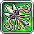 Spirit Ballista |
발리스타가 이제 3발의 화살을 쏘며 쿨다운 단축; 기본 공격마다 발리스타 화살 발사 | 쿨다운이 크게 줄어드는 중요한 맵 클리어 능력입니다. |
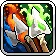 Elemental Mayhem |
Compass 업그레이드 100개당 Tempest 원소 데미지 및 MultiShoot 확률 증가 | 주요 이점은 World 5 이후 혐오 생물(abomination) 사냥을 위한 원소 데미지입니다. |
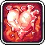 Pumpin' Power |
번식력(breedability) 레벨 25당 Tempest 치명타 확률 증가 | 추가 데미지 출력이지만 번식력 투자에 따라 천천히 스케일링됩니다. |
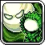 Tempest Form |
Tempest Form 진입/종료 및 Tempest 데미지 증가 | 더 어려운 맵을 위해 Tempest Form에 있는 동안 추가 데미지를 제공합니다. |
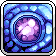 Windborne |
Compass 업그레이드 100개당 Tempest 방어 및 Accuracy(명중률) 증가 | 추가 방어와 Accuracy를 제공합니다. Accuracy가 진행의 병목이라면 우선시하세요. |
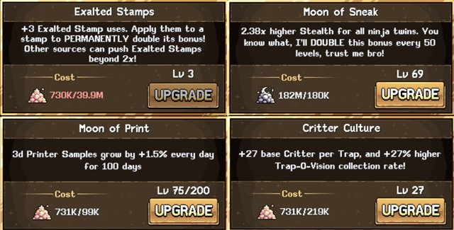
Tempest Form 팁
다음 최적화 전략을 사용하세요:
- 기도 제거: Midas Minded나 Jawbreaker처럼 HP를 증가시키는 기도를 제거하세요. Tempest Form에서 적의 체력이 스케일링됩니다.
- Tempest 장비: 특별한 Tempest Form 활과 반지는 적에게서 드랍됩니다. 다른 장비 슬롯, 음식, 카드, Star Signs는 드랍률에 집중하세요. Compass의 "The Luck Factor" 업그레이드가 일반 드랍률에 따라 Tempest 아이템 드랍을 증가시키기 때문입니다.
- 10% 업그레이드 돌: 항상 10% 업그레이드 돌로 Tempest Form 장비를 업그레이드하세요. 성공 확률이 가장 낮지만 전체적으로 최고의 기대값을 제공합니다. Compass 업그레이드로 최종적으로 돌 500개로 성공을 보장할 수 있지만, 최소 World 5까지는 기다리세요.
- 최대 먼지 설정: 최적의 먼지 파밍 장비는 Tempest Bow of Dust, Tempest Ring of Gold 하나, Tempest Ring of Power 하나입니다. World 4 이전에는 이중 먼지 반지를 사용하고, World 6에서는 Ring of Power를 원소 반지로 교체하세요.
- 혐오 생물 사냥 설정: 혐오 생물의 원소 약점에 맞는 활과 두 개의 Tempest Rings of Power를 사용하세요.
- Voidwalker 부스트: Voidwalker의 Enhancement Eclipse에 최소 150 탤런트 포인트가 있는지 확인해 Wind Walker의 고래 공격을 강화하세요.
- Compass 개요: Compass 업그레이드 시스템에는 네 가지 주요 경로가 있습니다: Elemental Path(장비 및 메달리온), Fighter Path(데미지 및 Accuracy), Nomadic Path(계정 업그레이드), Survival Path(체력/방어 및 먼지 획득).
- 초기 먼지 보너스: Survival Path의 초기 먼지 업그레이드 6개를 우선시하며, 마지막은 Survival Path 레벨 16에서 잠금 해제됩니다. 다른 먼지 보너스로는 Abomination Slayer IX, 고급 매력(Pristine charm), 황금 공 아케이드 보너스가 있습니다.
- 계정 부스트: Wind Walker는 스탬프 보너스를 두 배로 늘리는 향상된 스탬프 업그레이드, 은신 대폭 강화, 3D Printer 샘플 성장률 향상, 트래핑 생물 획득 증가, Compass의 최대 원자 업그레이드 레벨 증가를 잠금 해제합니다.
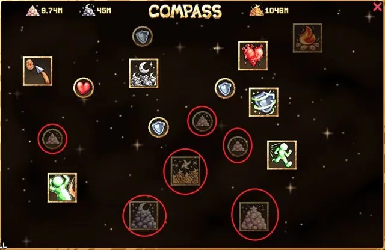
Tempest Form 월드 진행 가이드
World 1
- 최소 Accuracy(명중률), 생존할 충분한 체력, 그 다음 데미지를 확보하며 각 맵을 진행하세요.
- Wood Boards나 Poops에서 무기 파워(~30+)와 추가 먼지(~35+)가 적당한 여러 개의 Tempest Bows of Dust를 파밍하세요.
- 최소 하나의 10% 업그레이드 돌이 성공할 때까지 활을 업그레이드하세요. 이 무기는 World 3에 도달하기에 충분히 강력하면 됩니다.
- 충분한 혐오 생물을 처치해 World 2를 잠금 해제하세요.
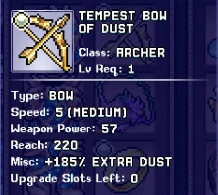
World 2
- 최소 Accuracy 및 체력 요구 사항에 먼지를 소비하면서 몬스터를 1격 처치하고 혐오 생물을 처치하기에 필요한 데미지를 추가하세요.
- 혐오 생물 처치에 도움이 되는 Tysons에서 Tempest Rings of Punchies를 파밍하고, 두 개의 반지에 10% 업그레이드 돌이 성공하도록 집중하세요.
- Tysons와 Snelbie에서 먼지를 파밍하여 World 3을 잠금 해제하기에 충분한 혐오 생물을 처치할 수 있도록 데미지 스탯을 높이세요.
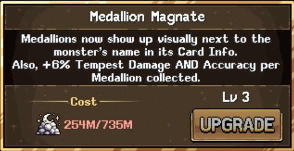
World 3
- World 3은 진행이 느려지지만 같은 먼지 투자 전략으로 World 4로 진입하세요. Elemental Mayhem과 Windborne이 총 업그레이드 수와 함께 스케일링되므로 저렴한 업그레이드를 소홀히 하지 마세요.
- Frost Flake와 Mamooth에서 더 높은 무기 파워의 먼지 활을 파밍하고, 최소 두 개의 10% 업그레이드 돌이 성공하도록 하세요.
- Bop Box까지 맵을 잠금 해제하여 최소 하나의 10% 업그레이드 돌이 성공한 두 개의 Tempest Rings of Gold를 파밍하세요.
- Compass Survival 트리의 Solardust Hoarding을 위해 Bop Box에서 최소 10만 Solardust를 파밍하세요.
- Neyeptune, Dedotated Ram, Bloodbone 맵은 잠금 해제하지 마세요. 필수가 아니며 먼지 비용이 많이 듭니다.
- 원소 데미지가 풀 약점의 혐오 생물에 중요해집니다. Mimics나 Bloque에서 풀 활을 파밍하고 최소 두 개의 10% 성공 돌로 업그레이드하세요.
- 충분한 먼지 업그레이드(Sheepie와 Bloque는 좋은 먼지 비율)와 무기를 확보한 후 World 3, 2, 1의 혐오 생물을 처치해(Neyeptune와 Bloodbone 제외) World 4를 잠금 해제하세요. 놓쳤을 수 있는 Deepwater Docks의 World 2 혐오 생물도 처치하세요.
- 데미지가 부족하다면, World 1과 2에서 몬스터 메달리온(Medallion)을 파밍하세요. 이것들은 Elemental Path의 Medallion Magnate 업그레이드로 데미지를 높여주지만 자동 수집되지 않으므로 직접 줍어야 합니다.
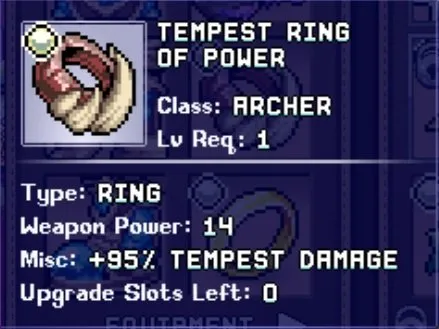
World 4
- World 4는 먼지 획득이 크게 증가합니다. 초반에는 혐오 생물을 무시하고 가능한 한 많은 맵을 진행하세요.
- AFK Info 화면에서 반지 조합(먼지 부스트, Tempest 데미지, 몬스터 약점 원소 매칭)을 실험해 보세요. World 4부터는 데미지가 먼지 획득에 중요한 역할을 하는데, 데미지가 높으면 Eternal Hunt에서 더 많은 사슴을 처치해 먼지 획득 시간을 늘릴 수 있기 때문입니다.
- Compass 업그레이드는 데미지와 먼지 획득에 집중하고, 보조 목표는 무기나 반지 슬롯 소모 없이 업그레이드 돌 실패를 막는 Elemental Path의 Stone Failsafe(업그레이드 17)를 잠금 해제하는 것입니다.
- Stone Failsafe를 최대화한 후 Soda Can에서 World 4 약점을 위한 필요한 Tempest Bow of Wind를 파밍해 World 5로 진입하세요.
- 혐오 생물을 처치하려면 최소 세 개의 10% 업그레이드 돌이 성공한 높은 무기 파워 활과 Purple Mushroom에서 얻은 Tempest Ring of Power에 세 번의 성공적인 업그레이드가 필요합니다.
- Compass 레벨 업그레이드, Wind Walker 탤런트 포인트 레벨, AFK 시간, 업그레이드 돌 운이 World 5로의 진행 속도를 결정합니다. PC 플레이어는 혐오 생물을 처치하기 위해 24시간 이상 AFK할 수도 있습니다.
World 5 및 6
- Crawlers(78~80)에서 강한 기본 무기 파워의 먼지 활을 파밍하고, 보장 성공 Compass 업그레이드로 스탯을 최대화하기 위해 10% 돌 2,500개를 사용하세요.
- 기본 먼지 획득과 공격 속도를 최대화할 수도 있지만, 무기 파워가 가장 중요합니다.
- World 5에 들어가면 원하는 만큼 Compass 업그레이드를 위한 먼지를 파밍하거나, 모든 원소의 강한 활과 반지를 확보해 더 높은 먼지 획득을 위해 World 6으로 진입하는 과정을 반복하세요.
Tempest Form 먼지/장비 파밍 위치
각 월드의 최적 먼지 파밍 위치는 아래와 같습니다. 해당 위치를 잠금 해제하지 않았다면, 그 먼지 유형에 대해 사용 가능한 가장 먼 맵에서 파밍하세요. Novadust(Survival Compass Path에서 잠금 해제)는 Active(직접 플레이) 중 모든 적에게서 드랍되는 다섯 번째 먼지 유형입니다.

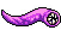
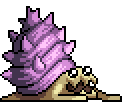
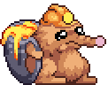
| 먼지 유형 | World 2 | World 3 | World 4 | World 5 | World 6 |
|---|---|---|---|---|---|
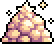 Stardust |
Tyson | 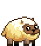 Sheepie |
Flying Worm | 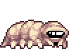 Crawler |
Royal Egg |
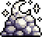 Moondust |
Snelbie | Bloque |  Clammie Clammie |
Biggole Mole | Samurai Guardian |
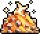 Solardust |
해당 없음 | Bloodbone | Flombeige | Citringe | Ceramic Spirit |
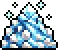 Cooldust |
해당 없음 | 해당 없음 | 해당 없음 | Tremor Wurm | Skydoggie Spirit |


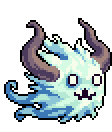
활 파밍 최적 위치 (항상 잠금 해제한 가장 높은 월드에서 파밍할 것 — 기본 무기 파워가 적 체력에 따라 스케일링됨. World 3 이후부터 혐오 생물 약점에 맞는 원소 활이 사냥에 필수적이며, 강한 먼지 활은 먼지 파밍에 핵심):
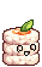
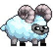
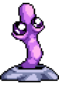
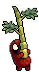
| 활 유형 | World 3 | World 4 | World 5 | World 6 |
|---|---|---|---|---|
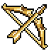 Dust |
 Mamooth Mamooth |
해당 없음 | Crawler | Ricecake |
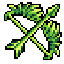 Grass |
Dedotated Ram | Biggole Wurm | 해당 없음 | Bamboo Spirit |
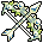 Wind |
Sheepie | 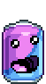 Soda Can |
Citringe | Mama Troll |
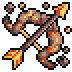 Fire |
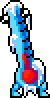 Thermister |
Stilted Seeker | Biggole Mole | 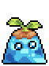 Sprout Spirit |
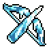 Ice |
Bloodbone | Choccie | Mister Brightside | Woodlin Spirit |
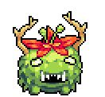

반지는 적 체력과 스케일링되지 않으며 어디서나 파밍할 수 있습니다:
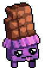
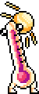
- Tempest Ring of Gold (추가 먼지): Bop Box(W3) 및 Biggole Wurm(W4)
- Tempest Ring of Power (추가 무기 파워 및 Tempest 데미지): Purple Mushroom(W4)

World 5와 6에서는 원소 반지와 Ring of Power를 결합하여 추가 원소 데미지를 얻고, 같은 원소 또는 먼지 활 중 가장 높은 무기 파워를 사용하세요.
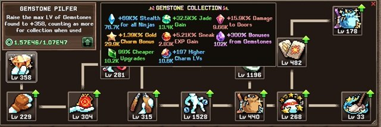
Sneaking 빌드
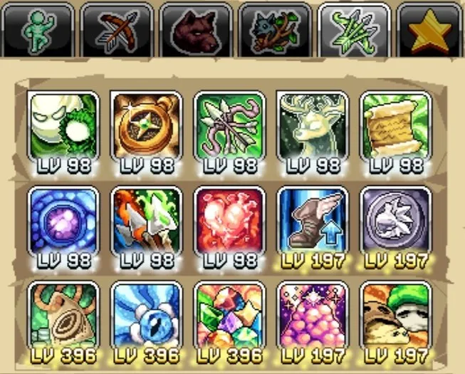
Wind Walker는 Tempest Form Compass와 탤런트 포인트를 통해 수많은 Sneaking(은신) 버프를 가지고 있습니다. 이 탤런트 빌드는 AFK(방치) 전투 또는 연구소나 Divinity 같은 장소에서 AFK 스킬링 중에 사용할 수 있습니다. 극한 효율(min-max)을 추구한다면 Sneaking 창을 확인하기 전에 이 탤런트 프리셋으로 전환하세요.
| 탤런트 | 효과 | 설명 |
|---|---|---|
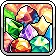 Generational Gemstones |
새 은신 보석 2개 추가 및 모든 보석 보너스 향상 | 닌자 지식(Ninja Knowledge) 업그레이드 비용을 줄이고 최대 레벨 매력(charm)을 잠금 해제하는 보석을 해제합니다. |
 Price Recession Price Recession |
총 업그레이드 10개당 모든 닌자 지식 업그레이드 비용 감소 | 더 많은 업그레이드를 구매하기 위해 옥(Jade)을 소비하기 전에 이 탤런트 빌드를 최대화한 상태로 전환하세요. |
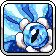 Sneaky Skilling |
모든 닌자의 은신 경험치 증가 | 빠른 스킬 진행을 위한 가산적 및 곱셈적 은신 경험치의 대규모 조합입니다. |